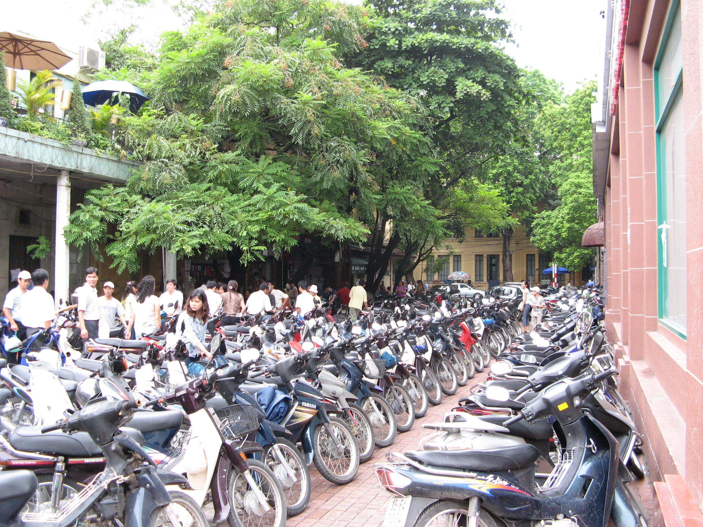
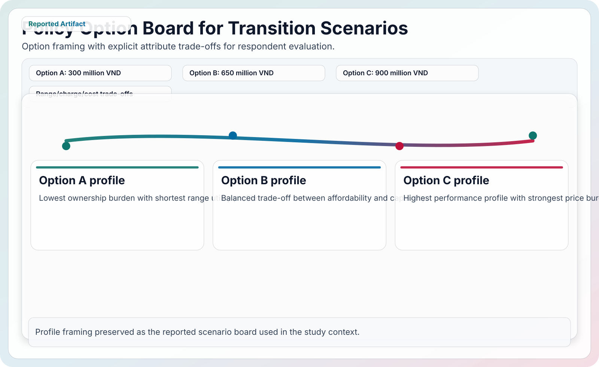
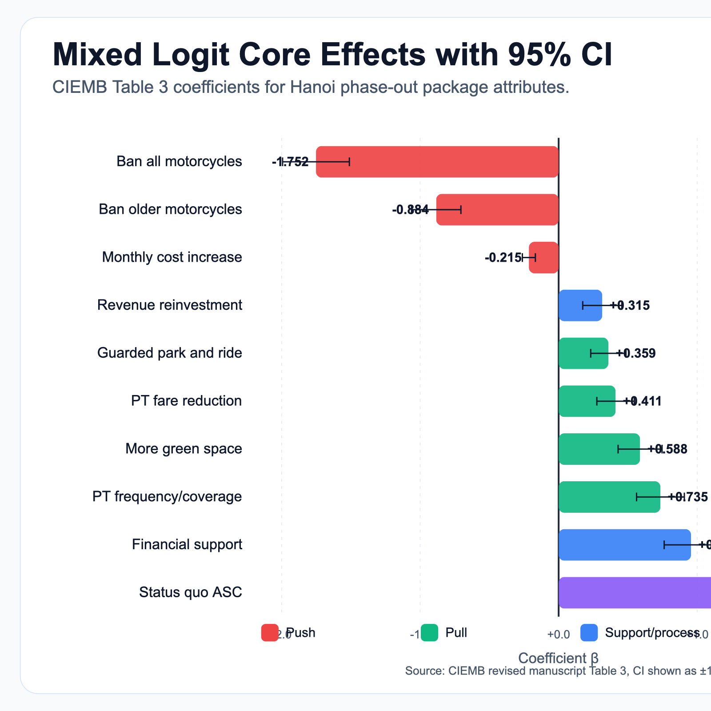
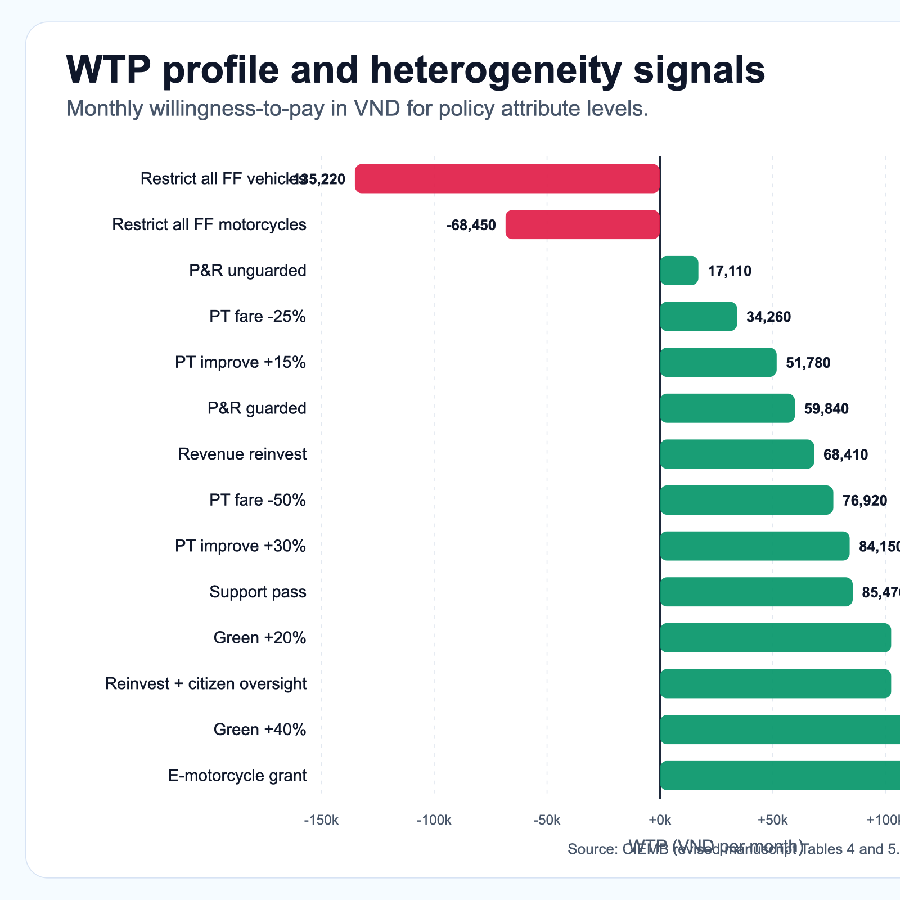
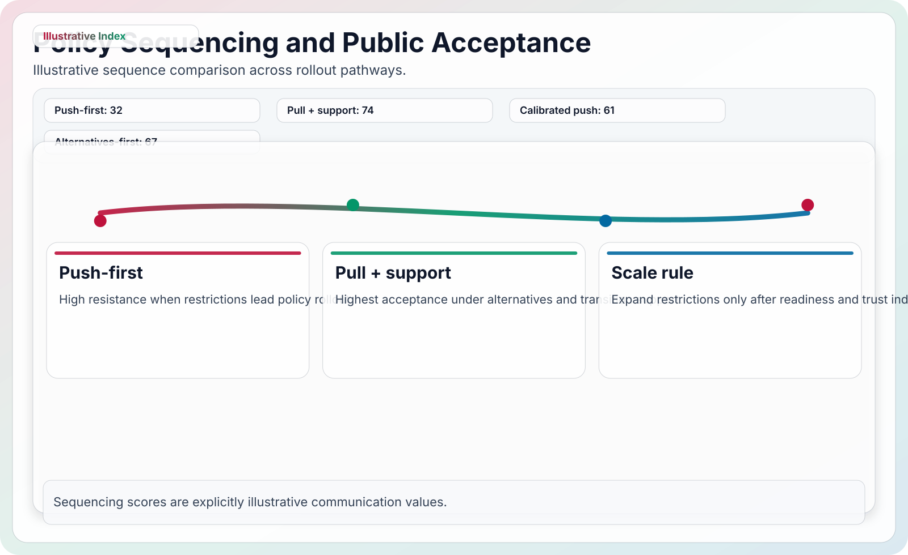
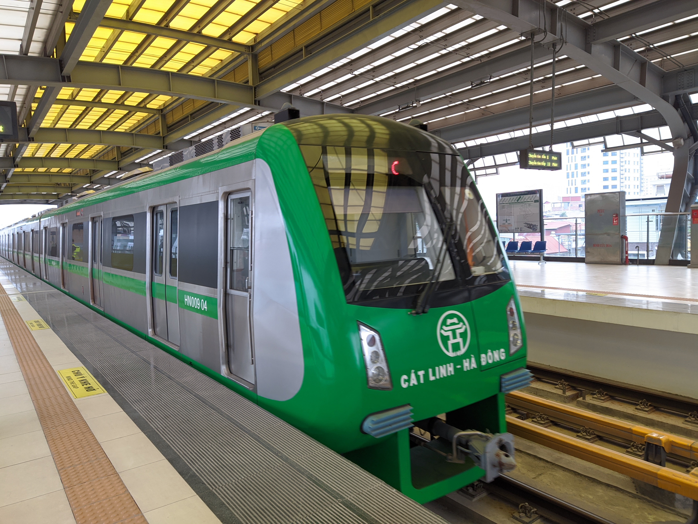

Study area
Hanoi, Vietnam Urban mobility transition context.
Back to all research
Mobility and policy research
Hanoi motorbike phase-out policy acceptance
This study does not treat a phase-out as a yes-or-no slogan. It tests which policy bundles Hanoi residents are more willing to accept: restriction-first packages, or packages that improve alternatives and support people before restrictions scale up.

Research problem
Acceptance depends on what arrives before restriction
Motorbikes are still tied to daily mobility, household budgets, and small-business routines in Hanoi. A restriction can look environmentally justified and still fail if residents see higher cost, weaker access, or unfair burden first. The study tests how policy design changes that reaction.
Push terms
Restriction scope and direct travel-cost increases represent the burden side of policy.
Pull terms
Better public transport, fare relief, park-and-ride, and green improvements represent credible alternatives.
Support and trust
Transition grants and transparent revenue use turn fairness into part of the implementation design.
Method
A stated-preference design built around policy bundles
Respondents compared policy alternatives against a status-quo option. Each alternative combined restriction, cost, public transport, support, green-space, park-and-ride, and governance attributes.
- DCE structure: 8 attributes with 3 levels each, generating 27 orthogonal profiles split across 3 blocks.
- Respondent task: each person completed 9 choice tasks that included a status-quo option.
- Modeling: mixed logit estimated main effects, interaction effects, and WTP ratios.
- Boundary: scenario outputs compare modeled acceptance. They are not traffic forecasts, compliance forecasts, or proof of public approval.

Evidence
The model separates burden, alternatives, support, and trust
The old interactive module hid the story behind controls. This version shows the main model evidence directly, then turns it into rollout logic.


Findings
Alternatives and support make restriction more politically workable
The clearest result is sequencing. Residents are more accepting when the policy bundle first makes other choices usable and protects exposed households.
Restriction burden is real
The strictest restriction scenario had the strongest negative coefficient (β = -1.752). A push-first plan starts from resistance.
Support has strong value
Financial support was the strongest positive coefficient (β = +0.956), pointing to affordability and transition cost as central conditions.
Trust weakens status quo lock-in
The ASC was positive, but the trust interaction reduced status-quo pull. Governance is not a side message; it changes acceptance.
One policy does not fit everyone
Motorcycle dependency, income, and environmental concern shifted preferences, so distributional design matters.
| Policy lever | Reported signal | Design reading |
|---|---|---|
| Strict restriction | β = -1.752 | Scale restrictions only after alternatives and support are credible. |
| Financial support | β = +0.956 | Protect households facing conversion and mobility costs. |
| Status quo | ASC = +1.621 | Residents prefer no change unless the bundle solves practical concerns. |
| Model fit | McFadden ρ2 = .28 | The DCE provides useful directional evidence, not a forecast. |
Roadmap
A support-first rollout is easier to explain and easier to defend
The policy story should move from alternatives to support, then to calibrated restrictions. That order matches the sign of the coefficients and the social risk in a motorbike-dependent city.

1. Build alternatives
Improve frequency, reliability, interchanges, fare relief, and corridor coverage before restriction intensity rises.
2. Protect exposed groups
Target grants and subsidies toward dependence-heavy and lower-income riders.
3. Publish the rules
Show how revenue is used and how exemptions, appeals, and support access work.
4. Restrict with gates
Scale restrictions only after readiness, support reach, complaints, and equity indicators are stable.



Bottom line
Acceptance is built before the restriction arrives.
The study points to a practical sequence: make alternatives usable, keep costs fair, communicate clearly, then scale restrictions with monitoring.
Evidence notes
How to read this page
- The current page summarizes a stated-preference DCE. It should not be read as a direct forecast of traffic, compliance, or public approval.
- Model figures are based on manuscript Table 3, Table 4, and Table 5 values already mirrored in the local portfolio assets.
- Illustrative transport photos are local mirrored Wikimedia assets already used by the portfolio.
- The redirect alias research-hanoi-phaseout.html remains in place for older links.